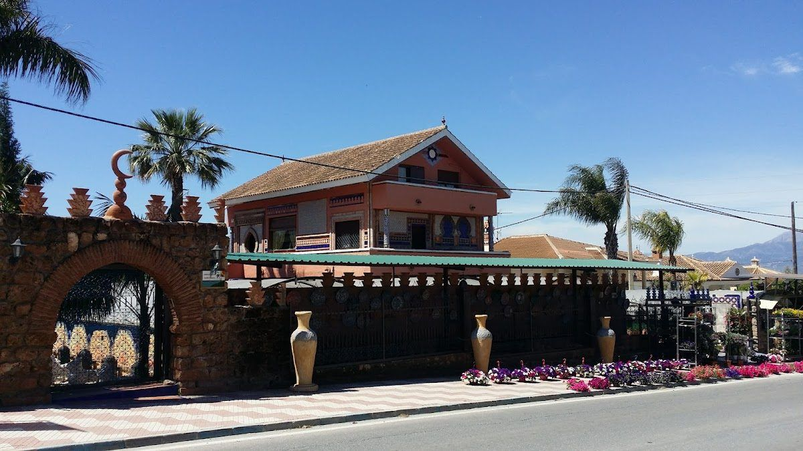
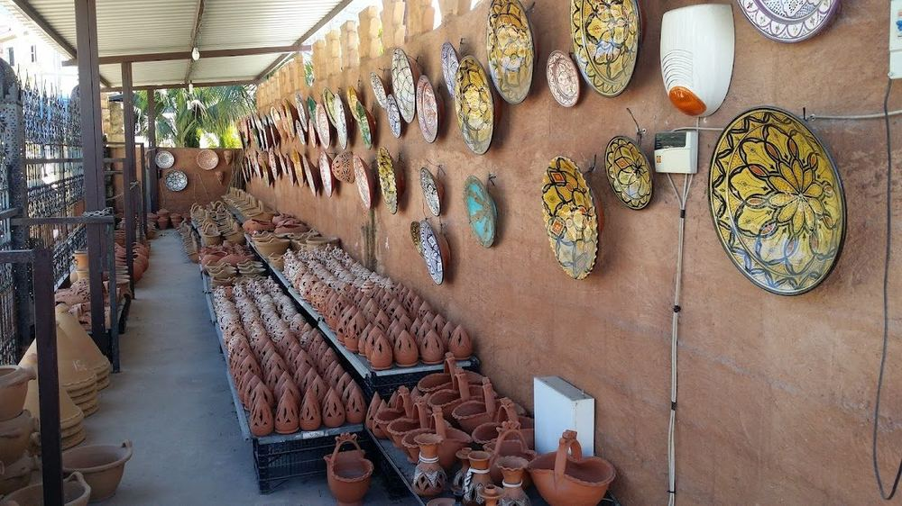
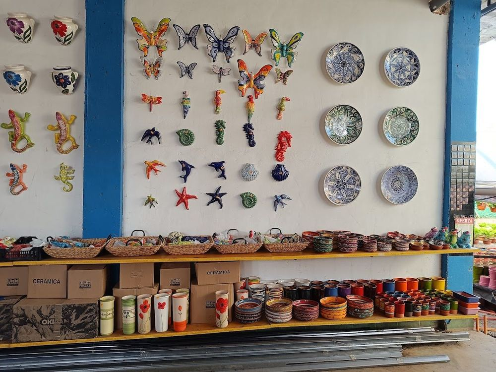
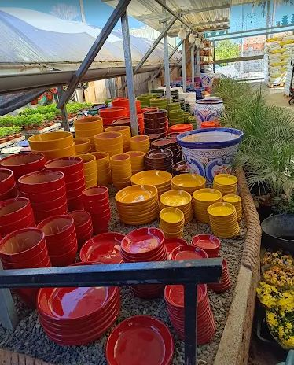
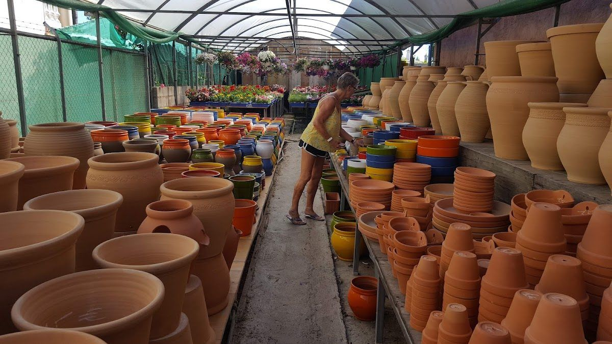

Plantas, flores y árboles en Alhaurín el Grande (Málaga)
Seleccionamos cada planta con cuidado para que llegue sana a tu casa y se quede contigo mucho tiempo.
Interior y exterior, para dar vida a cualquier rincón de tu casa o jardín.
Color fresco cada mes del año, elegido según lo que mejor florece en cada época.
Variedades adaptadas al clima de la comarca, para disfrutar tu propia cosecha.
Macetas, sustratos, abonos y todo el material que necesitas para cuidar tus plantas.
Te ayudamos a elegir la planta ideal para tu espacio, tu luz y tus cuidados.
Macetas, jarrones y piezas pintadas a mano, para darle a cada rincón ese toque de pueblo de toda la vida.

Cerámica pintada a mano
Figuras y detalles decorativos
Macetas y jarrones de barroTe acompañamos desde que eliges la planta hasta que la ves crecer.
Llevamos tus plantas hasta la puerta de casa, con el cuidado que merecen.
Resolvemos tus dudas de cuidado, riego, luz y sustrato, planta a planta.
Organizamos talleres de jardinería para aprender de la mano de nuestro equipo.

En Juan González Vivero llevamos años cuidando plantas en Alhaurín el Grande, aprendiendo de cada temporada y de cada cliente que entra por la puerta buscando consejo.
No vendemos solo plantas: compartimos lo que sabemos para que cada una llegue a tu casa con las mejores posibilidades de crecer sana. Por eso muchos vecinos vuelven año tras año, con dudas nuevas y jardines que van creciendo con ellos.
Trato cercano, conocimiento real y ganas de que tu jardín salga bien. Así entendemos nosotros este oficio.
Plantas, rincones y detalles de nuestro día a día en Alhaurín el Grande.
Ideas rápidas de nuestro equipo — las actualizamos según avanza el año. (bloque editable)
Comprueba la humedad de la tierra con el dedo antes de regar: cada especie y cada época del año necesitan un ritmo distinto.
Es un buen momento para dar espacio a nuevos frutales: arraigan mejor y llegan fuertes a los meses de más calor.
Un sustrato fresco con buen drenaje marca la diferencia en plantas de interior y exterior. Te ayudamos a elegir el más adecuado.
Ven a ver las plantas en persona, o escríbenos si tienes cualquier duda.
Ctra. Coín, 73 — 29120 Alhaurín el Grande (Málaga)
4,5★ en Google (125 opiniones)